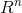
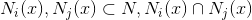
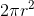

Getting Started
In this post we are going to integrate over sets of infintismal sections of  to calculate the surface area of a sphere. To do this, though, we first need to become acquainted with the following concepts:
to calculate the surface area of a sphere. To do this, though, we first need to become acquainted with the following concepts:
- Manifolds
- Neighborhoods
- Topological Space
- Homeomorphisms
This may seem like a lot, but we will actually be able to get through all of these ideas fairly quickly. Furthermore, all of these ideas are heavily interrelated.
The level of mathmatical knowledge necessary for this article to be a fun read is a working familiarity with calculus and at least some proof based math (e.g. linear algebra or abstract algebra).
Manifolds
Let's start with manifolds. Manifolds are a fundamental building block of topology and differential geometry. So what is a manifold?
Definition: Manifold
A Manifold is a topological space, M, where at each point, , a neighborhood around x that is homeomorphic to No worries if this definition made no sense to you. If you aren't familiar with topology, we need to define a Neighborhood, a Topological Space and a Homeomorphism before the definition of a manifold can become meaningful. I wanted to define a manifold first was so that we have an end goal in mind when we learn about the components of the definition of a manifold. This will also allow us to go full circle.
Let's start with Neighborhoods. When we talk about a neighborhood, we are actually talking about a neighborhood about a point, x. This is because the definition of a neighborhood is relative to some point, x.
Definition: Neighborhood
Suppose we have a point, x, in topological space. N is a Neighborhood of x ifKeep in mind that N needn't be an open set. For example, if N is in
- , an open set containing x such that
and it is defined as points in [-1,1] along the x-axis and points in [-1,1] along the y-axis then there are infinitely many open sets about the point x=(0,0) in N, but N is still a closed set. N could also be an open set, though. For example, if we're still in , if our point is x=(0,0) and N is the set of points spanning (-1,1) in the x-axis and (-1,1) in the y-axis.
Not familiar with open sets? Click here.
We mentioned in the definition of a Neighborhood that the point x is in a topological space but we haven't defined a topological space yet. So let's do that next.
Definition: Topological Space
Suppose we have a space, X, with a function N(x) that maps each point to the set of Neighborhoods associated with x. In other words,. X is a Topological Space if it satisfies the following conditions:
- N is a neighborhood of x
- For any  is a neighborhood of x
- is a neighborhood of y.
Because that definition of topological spaces is brutally technical, a very simple way of conceptualizing a topological space is a set of points with neighborhoods that act nicely with each other.
Finally we are on to homeomorphisms. Homeomorphisms are built upon the concept of isomorphisms. If you aren't familiar with isomorphisms then briefly skim this article and then this stack exchange post.
Definition: Neighborhood
A Neighborhood is a isomorphism between topological spaces.Any manifolds will be homeomorphic if we can continuously mold one into the other. A way of thinking about this is if one manifold were made out of silly putty, can you reshape that silly putty to make another manifold? If you can, those manifolds are homeomorphic.
. D itself is a manifold as well.
Calculating the Surface Area of a Sphere
Let's start with the general approach we're going to take here. We are going to break the unit sphere into infintismal sections, dxdy, and then map these sections to . We will then define a bijection between dxdy and our region in . We can use this bijection to determine how we are going to integrate over the sphere.
If you look at the figure of a homeomorphism in the section above, you can think of the surface S as the unit sphere. dxdy is the region that is being mapped to D. D is the region of that we are mapping to. All we need to do is account for how much the sides of that section are being stretched during this mapping. If we apply that stretch factor to the limits of our integrals as we integrate over the region, we will be able to calculate the surface area over our manifold (the unit sphere in this case)
We know that surface area of the unit sphere, . This means that if we were to take the surface area of the top half of a a sphere, it would be . Since the sphere is symmetric across the plane (x, y, z=0), proving that the top half of a sphere equals gives us that the area of the full sphere is .
Let's define a mapping,  , from dxdy in to a corresponding region on the surface of the unit sphere.
, from dxdy in to a corresponding region on the surface of the unit sphere.
We know that this mapping, is a homeomorphism. We also know . This is because the curvature of a sphere is constant across all directions. That nice fact allows us to break this problem down into just the x axis. Then we we bring the y axis back in, we know that we will be applying the exact same transformation. So let's solve for alpha.
It's interesting to note how much we've simplified this problem at this point: We've moved to the x-axis of half of our original sphere. We've also moved to a far simpler problem: how do we calculate the length of the arc of the top half of a unit circle by mapping from the line [-1, 1]? Once we have that, we can introduce this mapping back into the y-axis as well to go from an arc length to a surface area. By the way, the reason we are dealing with the line [-1, 1] in R is because -1 and 1 are the end points of the top half of a unit circle.
The formula for a cirlce is . So now we have y in terms of x and we know what the change in y will be as we move along the x. These are useful because for every dx step we take in R we are going to be taking a step along the arc of a circle.
If we want to integrate along dx in R the formula is simply . What about the top half of the unit circle though? For this, we need to map from line length to an arc length. The formula for an arc length of some function f(x) is given by . Using this knowledge we can solve for alpha:
Since we know that , it follows that:
Now that we have alpha, we can solve for the length of the top half of a circle:
Let's multiply this by 2, so that we have the entire length of the circle in the along the x-axis. This gives us
Let's now go back into and include the y axis, so that we are calculating surface area instead of arc length. Keep in mind, though, that calculating surface area is simply calculating the arc length in the x and then calculating the arc length in the y and multiplying these two values together.
We are multiplying each integral by 2 so that we convert the length of the top half of the circle to the full length of the circle in each direction. QED.
Links